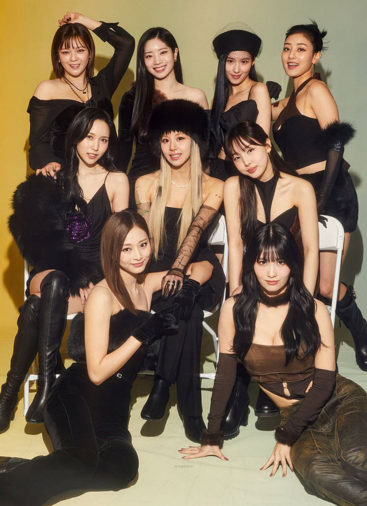

Nuestras Biografias
"Maritza Joselyn Ek Tuz"
¡Hola! mi nombre es Maritza Joselyn Ek Tuz, naci el 13 de junio del 2008 en la ciudad de Valladolid, Yucatan. Pertenezco a una familia conformada por 6 personas, quienes son mis padres Rodolfo y Aracely, mis hermanitas Alejandra y Hanna, mi abuelo Gregorio y conmigo son 6, personalmente me considero una persona amigable, paciente, inteligente, reservada y confiada. Actualmente curso el segundo semestre de COBAY, me pone feliz decir que voy bien con mis notas, entre en paraescolares de basquet y lo disfruto, mis materias favoritas son Recursos Socioemocionales, Lengua y comunucación y la que se me dificulta es Matematicas. Soy una adolescente con mucha imaginación y por ahora mi sueño es mejorar cada dia.
Mis hobis o pasatiempos favoritos son dibujar, hacer manualidades, escuchar musica, ver peliculas o dramas coreanos, limpiar y jugar basquet boll. La idea de viajar me facina de hecho hay lugares en particular que me encantarian visitar como la Ciudad de México que aúnque soy del país quisiera conocer más acerca de la ciudad y de lo que ya conozco, por otro lado Corea del Sur es otro país que también me encantaria visitar en especial las Ciudades de Seúl y Busan, conocer su cultura,sus zonas turisticas y provar sus populares platillos coreanos como el Tteokbokki y el Kimchi.
 Video de mi artista favorito
Video de mi artista favorito
BTS'Take Two'
"Katia Guadalupe Chuc Tun"
Datos personales, escolares y familiares
Mi nombre es Katia Guadalupe Chuc Tun, naci el 5 de septiembre del año 2007 en la ciudad de Valladolid, Yucatan. Soy la tercera de 4 hermanas, mis hermanas se llaman Naivy, Alondra y Anita. Mis padres son Maria y Vicente.Actualmente, estudio en la preparatoria "Cobay" del plantel de chichimila, donde estoy cursando el segundo semestre. Mis materias favoritas son matematicas y Recursos socioemocionales. Me encanta participar actividades festivos y especialmente jugar en los paraescolares de basquetbol.
Terminando mis estudios quiero lograr ser una gran doctora, es algo que opte desde hace algunos años y espero lograr ejercerlo.
Pasatiempos y Lugares favoritos
Uno de mis pasatiempos favoritos es leer comics, soy muy apasionada desde los 13 años generalmente me gusta los generos de comedia, accion y romance, en un futuro me gustaria coleccionar cosas con mis personajes favoritos al igual que disfruto de escuchar musica de genero k-pop y en ingles. Entre los lugares favoritos que tengo se encuentra la ciudad de playa del Carmen, el centro de mi pueblo y pasear en la ciudad de Valladolid y me encanta los viajes.

Video de mi artista favorito
BANGTANTV
"Diana Guadalupe Mukul Batun"
Mi nombre es Diana Guadalupe Mukul Batun, nací el 6 de Agosto de 2008 en un hospital de Valladolid y ahora vivo en Tekom.
Soy la tercera hija de un matrimonio conformado por mi papá, el señor Pedro Pablo Mukul Pat y por la señora Oti Silvestre Batun Ku, tengo dos hermanos mayores llamados Pedro Yahir Mukul Batun y Fátima Lizette Mukul Batun.
He vivido y estudiado toda mi vida en Tekom y actualmente estudio en COBAY Chichimila. Estoy cursando segundo semestre en el grupo "A".
Me gusta jugar con mi perrita por las tardes y también me gusta maquillarme, salir a pasear, leer género distópico o poemas de Pizarnik, ver pasarelas en youtube, me gusta probar combinaciones raras de ropa, ver redes sociales, escuchar música principalmente de BTS, Lana del Rey, Twenty One Pilots, Nicolle Dollanganger, Nightwish, Mazzy Star, The Strokes; coleccionar flores y hacer pilates. También me gusta salir a mi jardín y estar en mi habitación, otro de mis lugares favoritos son las tiendas de ropa y maquillaje, o donde sea que hayan muchas plantas.
-
Video de mi artista favorito
Ir al sitio de videos YouTube
"Jose Rodrigo Martin chi"
Cobay Chichimila
Soy José Rodrigo Martín chi, nací el 23 de mayo del año 2008, mis padres se llaman Bernarda Chi Chi y Misael de Jesús Martín Puc, tengo un hermanito llamado Pablo Ezequiel Martín Chi y un hermano llamado Jesús Isael Martin chi, asisto en el colegio de bachilleres Cobay chichimila y me encanta ir por que puedo ver a mis compañeros y aprender mucho.
Mis pasatiempos favoritos son jugar fútbol y mi otro pasatiempo seria escuchar musica con mis auriculares o en la bocina, unos de los lugares que me encanta estar es el campo de futbol y el otro lugar es estar con mis amistades, conviviendo juntos.
Video de mi artista favorito
video del cantante MC davo en YouTube
"Brayan de Jesús Dzib Bolio"
Datos personales, familiares y escolares
mi nombre es Brayan de Jesús Dzib Bolio, tengo 15 años de edad y naci el 8 de noviembre del año 2008. Mis padres son Cornelio Dzib Tuz y Juanita Bolio cauhich, tengo 6 hermanos 3 hombres y 3 mujeres. Actualmentec me encuentro cursando el segundo semestre de preparatoria en el Colegio de Bachilleres del Estado de Yucatán.
Mis pasatiempos
Mis pasatiempos son escuchar musica y dibujar y ver mis series favoritas.
Mis lugares favoritos
Mis lugares favoritos son el parque, mi casa, las piscinas.
Imagenes de lo que me gusta

Inserta un video
Habré el siguiente vinculo para ir al sitio web de videos de YouTube:
NMIXX "Passionfruit"
"Ricardo Alonso Nahuat Ku"
Mi Nombre Es Ricardo Alonso Nahuat Ku cuanto con 16 Años Y ActualMente Vivo Con Mis Padres Y Mis 2 hermanos En Chichimila Yucatan Mexico. Ahora Estoy A Unas Semanas De Concluir Con El 2 Semestre del Bachillerato, Estoy Apunto De Pasar Al 3 Semestre Y Este Sera Mi Segundo Año En El Plantel COBAY
Uno De Mis Pasatiempos Es Ver Series Coreanas, Escuchas Musicas Y Tambien Revisar Mis Redes Sociales.
Uno De Los Lugares Que Me Gustaria Visitar Seria Corea Del Sur Ya que Su Cultura Es Hermora, Otro De Los Lugares Que Me Gustaria Visitar Seria Whashinton.
Mi artista favorito
Kevin Kaarl